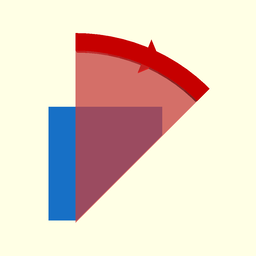
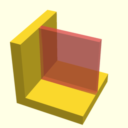
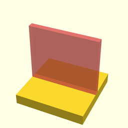

package foundation/limits
Dependencies
graph LR
A1[foundation/limits] --o|include| A2[foundation/core]Recommended settings for 3d printing properties (limits taken from Knowledge base | Hubs)
This file is part of the 'OpenSCAD Foundation Library' (OFL) project.
Copyright © 2021, Giampiero Gabbiani (giampiero@gabbiani.org)
SPDX-License-Identifier: GPL-3.0-or-later
Variables
variable $fl_print_tech
Default:
FL_TECH_FDM
this is the printing technology used
variable FL_LIMIT_CLEARANCE
Default:
"Connecting/moving parts"
The recommended clearance between two moving or connecting parts
variable FL_LIMIT_DETAILS
Default:
"Embossed & engraved details"
Features on the model that are raised or recessed below the model surface [mm,mm]
variable FL_LIMIT_ESCAPE
Default:
"Escape holes"
The minimum diameter of escape holes to allow for the removal of build material
variable FL_LIMIT_FEATURES
Default:
"Minimum features"
Recommended minimum size of a feature to ensure it will not fail to print
variable FL_LIMIT_HBRIDGES
Default:
"Horizontal Bridges"
The span a technology can print without the need for support
variable FL_LIMIT_HOLES
Default:
"Holes"
Minimum diameter a technology can successfully print a hole
variable FL_LIMIT_OVERHANGS
Default:
"Support & overhangs"

Maximum angle a wall can be printed at without requiring support (degree).
variable FL_LIMIT_PIN
Default:
"Pin diameter"
Minimum diameter a pin can be printed at
variable FL_LIMIT_SWALLS
Default:
"Supported walls"

The minimum width of walls connected to the rest of the print on at least two sides (mm).
variable FL_LIMIT_TOLERANCE
Default:
"Tolerance"
Expected tolerance (diameter accuracy) of a specific technology [mm,%]
variable FL_LIMIT_UWALLS
Default:
"Unsupported walls"

Unsupported walls are connected to the rest of the print on less than two sides (mm).
variable FL_TECHNOLOGIES
Default:
[FL_TECH_SLS,FL_TECH_FDM,FL_TECH_SLA,FL_TECH_MJ,FL_TECH_BJ,FL_TECH_DMLS,]
variable FL_TECH_BJ
Default:
"Binder jetting"
variable FL_TECH_DMLS
Default:
"Direct metal Laser sintering"
variable FL_TECH_FDM
Default:
"Fused deposition modeling"
variable FL_TECH_MJ
Default:
"Material jetting"
variable FL_TECH_SLA
Default:
"Stereo lithography"
variable FL_TECH_SLS
Default:
"Selective Laser sintering"
Functions
function fl_techLimit
Syntax:
returns the corresponding recommended value for the «property» name of the current $fl_technology.